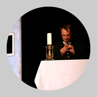
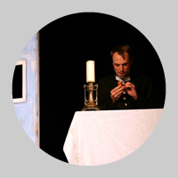

Lakomá Barka
Pohádka nepohádka, 50 minut bez pøestávky, hraje CO?!
Øekli byste Dejvice — dej více! Vùbec ne! Lakotili, hamonili a byli krkouni. Nejlakomìjší drgrešle ze všech byla Barka, faráøova kuchaøka.
Dramatizace pohádky nepohádky z knihy Jana Werich Fimfárum.
Divadelní adaptace: Ludìk Horkı
Reie: Lucije Valenová a Lucie Wildtová
Vıprava: Lucije a Rozárka Valenovy
Realizace vıpravy: CO?!
 


Osoby a obsazení:
Barka: Ondøej ulpík
Faráø: Tomáš Horáèek
Uèitel: Jan Tichı
Uèitelová: Marta Procházková
Kubát: Pavel Paleèek
Kubátová: Ivana Vránková/Denisa Dlouhá
Starosta: Ondøej Wald
Starostová: Denisa Dlouhá/Ivana Vránková
Dìti: Klára Kuncová, Tereza Suchá, Pavel Paleèek, Denisa Dlouhá, Ivana Vránková
Pøedstavení má 50min, hraje se bez pøestávky
Premiéra: 20. èervna 2012 v Divadle Radar